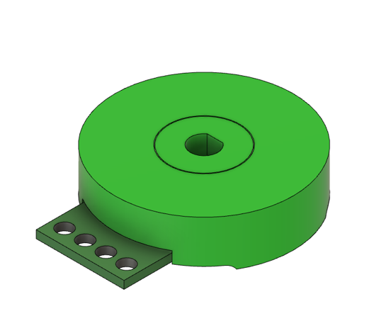

CRADS 360° SMD

The Continuous Rotation Angle Detection Sensor (CRADS) is a type of potentiometer I created that is capable of continuous rotation with no dead zones.
I was building a robotic arm that required many sensors with continuous rotation, absolute position, and low cost.
Existing options like Hall effect rotational encoders or optical encoders could have worked, but with the quantity needed, they were not cost effective.
To address this, I engineered the CRADS sensor as a practical, affordable alternative and personally authored the patent application,
with legal guidance from a patent attorney.
Key Features
- Continuous 0–360° rotation in both directions
- Redundant signal combination reduces measurement error
- Compact and cost-effective design
- Compatible with Arduino and other microcontrollers
- Multiple embodiments: single sweeper and dual sweeper